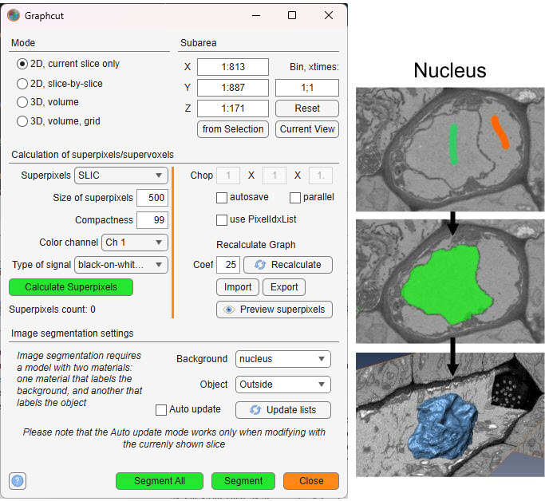
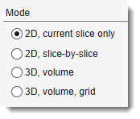
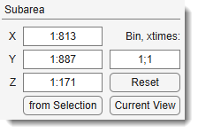

Graphcut Segmentation¶
Semi-automated image segmentation using the max-flow/min-cut graphcut method.
Overview¶
The Graphcut segmentation tool provides semi-automated segmentation using the max-flow/min-cut algorithm. It is based on the Max-flow/min-cut algorithm by Yuri Boykov and Vladimir Kolmogorov, with a MATLAB implementation by Michael Rubinstein.

Instead of segmenting individual pixels, it operates on superpixels (2D) or supervoxels (3D),
generated via the SLIC algorithm by
Radhakrishna Achanta et al. or the Watershed algorithm. SLIC superpixels excel for
objects with intensity contrast, while Watershed superpixels are better for objects with
distinct boundaries.
Precomputing superpixels requires initial processing time but accelerates subsequent segmentation.
General example¶
How to use

Steps to perform graphcut segmentation:
- Use two model materials to mark background and object areas of interest
- Launch the tool via
Ribbon → Tools → Semi-automatic segmentation → Graphcut - Choose a mode: 2D or 3D
- Select superpixel/supervoxel type: SLIC or Watershed
- Generate superpixels/supervoxels by clicking
- Verify and adjust superpixel size if necessary
- Click to start segmentation
Note
Some functions may require compilation; see the System Requirements page for details
Mode panel¶
The Mode panel lets you select the segmentation scope.

- — segments only the current slice in the Image View panel
- — applies 2D segmentation to each slice individually
- — performs 3D segmentation on the entire dataset or a subarea (see Subarea panel below)
- — segments a large dataset by dividing it
into subvolumes (defined by Chop fields); the subvolume centred in
the Image View panel is processed
(enable the centre marker via
on the Quick Access Bar).
Use to process all subvolumes.
Subarea panel¶
The Subarea panel defines a dataset subset for processing, useful for large datasets or binning.

- sets the width range (e.g.,
1:512) - sets the height range
- sets the z-slice range
- fills X, Y, and Z with coordinates from the Selection layer's bounding box
- limits X and Y to the visible area in the Image View panel
- restores full dataset dimensions
- binning factor
XY; Zto reduce resolution for faster processing (e.g.,2; 1halves XY)
Warning
Auto update mode () is unavailable with binned datasets.
Calculation of superpixels/supervoxels¶
Superpixels (2D) or supervoxels (3D) are precomputed using SLIC or Watershed algorithms. SLIC suits intensity-contrast objects (e.g., lipid droplets); Watershed excels for boundary-defined objects.
SLIC vs. Watershed example


- : superpixel type — SLIC or Watershed
- : approximate size of each superpixel (2D) or supervoxel (3D) in pixels. Smaller values give finer segmentation but increase computation time.
- : controls SLIC superpixel squareness (higher values yield squarer shapes). Not applicable to Watershed.
- : color channel for superpixel calculation.
- : signal polarity — black-on-white (electron microscopy) or light-on-black (light microscopy, fluorescence).
- : computes superpixels/supervoxels and builds the boundary graph. The button turns green on completion.
- X/Y/Z: number of grid tiles in each dimension for 3D, volume, grid mode. Also controls SLIC supervoxel grid tiling.
- : automatically prompts to save the graphcut
structure to disk (
*.graph) after superpixels are computed. - : enables parallel processing (parfor) for Watershed clustering in 3D, volume, grid mode. Starts a parallel pool if not already running.
- : pre-computes pixel index lists per superpixel. Speeds up mask updates at the cost of extra memory.
- : overlays the computed superpixel boundaries on the current image.
- : loads a previously saved graphcut structure
from disk (
*.graph) or the MATLAB workspace. - : saves superpixels and the graph. Options:
- Export to Matlab — exports the
Graphcutstruct to the MATLAB workspace. - Save to a file — saves to a
*.graphfile (excluding the sparseGraphfield). - Export to a model — writes the superpixel labels into the model layer as materials.
- Export to 3DLines — converts the adjacency graph to a Lines3D object (not recommended for large numbers of supervoxels; see this video).
- Export to Matlab — exports the
Recalculate Graph panel
- : edge weight scaling factor (default 25). Graph edge weights are computed as exp(−normalised_intensity_difference × Coef). Increase to sharpen boundary cuts; decrease to allow softer cuts.
- : rebuilds the sparse boundary graph from the existing edge list without recomputing superpixels. Use this after changing .
Image segmentation settings¶
The Graphcut workflow uses labeled areas (Background and Object) for segmentation. It handles objects with both boundaries and intensity contrast, making it versatile.

- : model material that labels background areas.
- : model material that labels objects of interest.
- : refreshes the material dropdowns from the current model.
- : re-runs segmentation automatically after each paint stroke on the currently shown slice. Best for small datasets (~400×400×400 px).
Warning
In Auto update mode, use only the
shortcut (not Shift+A).
Recalculate final segmentation with .
Unavailable with binned datasets.
Image segmentation example¶
Steps for segmenting mitochondria using Graphcut:
- Load a sample dataset:
Ribbon → Home → Import image from → URL, enter http://mib.helsinki.fi/tutorials/WatershedDemo/watershed_demo1.tif - Add a material named Background in the Segmentation panel with (right-click to rename)
- Use the Brush tool to label cytoplasm, then press to add it to Background
Snapshot

- Add another material named Seeds with
- Label mitochondria interiors, then press to add to Seeds
Snapshot

- Start Graphcut via
Ribbon → Tools → Semi-automatic segmentation → Graphcut - Select Watershed in
- Ensure Background and Seeds are set in the Image segmentation settings panel
- Click to segment mitochondria
- Add more seeds to refine, then re-segment with or enable
- Results appear in the Mask layer
- Optionally smooth the mask:
Ribbon → Mask → Smooth Mask
Snapshot

References¶
- Max-flow/min-cut algorithm by Yuri Boykov and Vladimir Kolmogorov (research license only)
- MATLAB wrapper for maxflow by Michael Rubinstein
- SLIC superpixels and supervoxels by Radhakrishna Achanta et al.
- Region Adjacency Graph (RAG) by David Legland, INRA, France (modified for Watershed)
Back to MIB | User interface | Ribbon | Tools